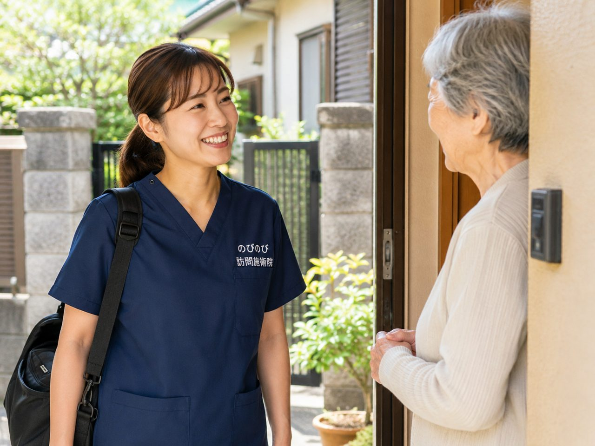

吹田で暮らすご家族が、膝や腰の痛み、しびれで通院に苦労している。近くに住む家族も、毎回の付き添いまでは難しい。そんなときの選択肢が、自宅まで伺う訪問鍼灸マッサージです。のびのび訪問施術院は、鍼やお灸に、体をほぐす手技も加えて、長引く痛みやしびれ、冷え、体のこわばりに向き合います。医師の同意書があれば医療保険が使え、1割負担なら1回およそ395円。まずは「うちの親は対象になる？」の確認だけでもかまいません。
短くまとめます。吹田市で訪問鍼灸マッサージをお探しなら、通院が難しくなった方の自宅や施設へ国家資格者が伺い、医師の同意にもとづく医療保険（はり・きゅう）で施術します。費用は1回あたり総額3,950円で、自己負担は1割で約395円。ほぐす手技や機能訓練は組み合わせます。これらについて別途の料金はいただきません。介護保険の支給限度額とは別枠で、要介護認定がなくても医師の同意があれば利用できます。JR吹田・阪急吹田・江坂・千里山・佐井寺・山田・岸部など、吹田市内の慢性的な痛み・しびれ・こわばりに対応しています。
千里山でも、江坂でも、ご自宅までうかがいます
少し足腰が弱っただけで、これまで通えていた治療院やクリニックが遠く感じられるようになります。バスを乗り継いで、待合室で長く待って、また帰ってくる。その一連が体にこたえるようになると、「今日はやめておこう」と受診を先延ばしにしてしまいがちです。
のびのび訪問施術院は、そうして通院がむずかしくなった方のご自宅や施設へ、国家資格を持つ施術者がうかがって、はり・きゅう・マッサージを行っています。出かける準備をしなくても、住み慣れた部屋で横になったまま受けられます。
吹田市で、1回およそ395円から受けられる仕組み
「訪問してもらうと高いのでは」と身構える方によくお会いします。実際には医療保険（療養費）を使うため、思っているより負担は軽く済みます。1回の施術は総額3,950円で、このうちご自身で支払うのは自己負担の割合ぶんだけです。1割の方で約395円。たとえば週2回のペースで続けても、1割負担なら月におよそ3,160円です。吹田市内であれば別途の出張費はいただかず、どの地域へうかがっても同じ金額になります。
保険を使うには、医療保険への加入に加えて、医師が発行する同意書が必要です。要介護認定は関係ありません。認定を受けていない方でも、対象の症状で同意書がそろえば利用できます。介護保険とは別の枠組みなので、デイサービスなどで支給限度額を使い切っていても、その枠を圧迫することなく併用できます。仕組みをもう少しくわしく知りたい方は、料金はいくら？医療保険の自己負担額と仕組みもあわせてご覧ください。
「吹田市の訪問マッサージ」をお探しの方へ
吹田市で在宅の施術をお探しになるとき、多くの方が「吹田 訪問マッサージ」という言葉で調べておられます。ただ、この呼び名でまとめられている施術は、制度としては二つの枠組みに分かれます。はり・きゅうの療養費と、あん摩マッサージ指圧の療養費です。それぞれ対象になる状態がちがい、いずれも医師の同意など所定の要件があります。
のびのび訪問施術院は、はり・きゅうを施術のベースにしていて、保険はすべて鍼灸で算定します。その日の体の状態を確認しながら鍼やお灸を行い、必要に応じて手技やストレッチ、無理のない範囲で身体を動かす運動なども組み合わせます。どちらの制度にあたるのかを、はじめからご自身で判断していただく必要はありません。ちがいについては訪問マッサージと訪問鍼灸の違いをご覧ください。
吹田市内はJR吹田、阪急吹田、江坂、千里山、佐井寺、山田、岸部など全域に伺います。エリア内であれば別途の出張費・交通費はかかりません。
症状ごとに、もう少し踏み込んでまとめたページもあります。立ち座りや階段がつらいなら吹田市で膝の痛みにお悩みの方へ、腰から足にかけての痛みやしびれなら吹田市の坐骨神経痛・腰から足の痛み、腕が上がらないつらさなら吹田市で五十肩・肩の痛みにお悩みの方へ、手足の動かしにくさなら吹田市でパーキンソン病の在宅ケアをお探しの方へ、脳梗塞のあとの麻痺やこわばりなら吹田市で脳梗塞の後遺症ケアをご覧ください。
市境にお住まいの方も承っています。隣り合う豊中市、茨木市、摂津市、箕面市も同じく対応エリアです。北摂では高槻市にもうかがっています。
保険の対象になる症状と、あわせて行うこと
療養費の対象となるのは、決められた症状です。はり・きゅうでは「神経痛・リウマチ・頸肩腕症候群・五十肩・腰痛症・頸椎捻挫後遺症」が該当します。吹田市でよくいただくのは、坐骨神経痛で脚が痛む、腰が重くて起き上がりづらい、五十肩で腕が上がらない、といったご相談です。手足のしびれや冷え、むち打ちのあとに残った不調でお困りの方もいらっしゃいます。
鍼灸に加えて、固まった関節を動かしやすくする手技や、筋肉のこわばりをゆるめるケア、動く範囲を保つための機能訓練もあわせて行います。この訓練に追加の料金はかかりません。ひとつ、あらかじめお伝えしておきたいことがあります。鍼灸やマッサージは病気そのものを治すものではなく、効き方には個人差があります。効果を大げさに約束することはしません。なお、同じ部位について医療保険のリハビリを受けている場合、その部位の鍼灸は同時には算定できない決まりです。膝の痛みが続いている方は、吹田市で膝の痛みにお悩みの方へのページで具体的なケアの内容にふれています。
お悩みがはっきりしている方は、症状別のページのほうが早いかもしれません。吹田市の坐骨神経痛・腰から足の痛みと吹田市で五十肩・肩の痛みにお悩みの方へでは、それぞれ何ができて何ができないかを細かく書いています。
申し込んでから、部屋で受けられるまで
はじめての方は、まず電話やお問い合わせでご連絡ください。症状やお住まいのご様子をうかがったうえで、無料の体験施術にお伺いします。合いそうだと感じていただけたら、かかりつけの先生に同意書をお願いします。同意書が用意できれば、あとは日程を決めて訪問が始まります。書類のやりとりが不安な方には、こちらから流れをご案内しますので、ご家族が遠方にお住まいでも進められます。施設に入居中の方も、スタッフの方と相談しながら受けていただけます。
「家に人を上げるのは気が引ける」という方へ
この気持ちは、吹田でもよくうかがいます。部屋を片づけておかなければ、知らない人を通すのは落ち着かない、そう思うのは自然なことです。施術に必要なのは、横になれるスペースがひと畳ぶんほど。特別な準備はいりません。同じ施術者が続けて担当しますので、回を重ねるうちに顔なじみになり、体の変化も把握しやすくなります。一人暮らしのご両親を心配されているご家族にとっては、定期的に専門職が訪ねることが、様子を知る手がかりにもなります。
吹田市で訪問している地域と、来てもらえる時間
JR吹田駅・岸辺駅、阪急の吹田駅・豊津駅・関大前駅・千里山駅、地下鉄御堂筋線の江坂駅。こうした駅の周辺から、江坂や佐井寺、山田、北千里、南千里、岸部といった地域まで、市内のご自宅へうかがっています。エレベーターのない古い棟にお住まいの方や、駅から距離のある一戸建ての方にこそ、外に出ずに受けられる訪問は向いています。うかがえるのは平日の9時から18時までで、土曜・日曜・祝日はお休みをいただいています。その範囲で、ご都合を相談しながら曜日と時刻を決めていきます。市内のどこまで対応しているか気になる方は、対応エリアはどこまで来てもらえる？もご確認ください。
吹田市で、まずどこに相談すればいいのか
「そろそろ何か使ったほうがいいと思うけれど、どこに聞けばいいのか」。吹田市の方からも、この入口のご相談をよくいただきます。
迷ったときは、お住まいの地区を担当する地域包括支援センターが最初の一歩になります。吹田市には市内15か所の地域型センターと、市役所に置かれた基幹型センターがあり、担当は住所で決まります。どこが担当かは吹田市の地域包括支援センターのページで確かめられます。
センターでは、介護や健康、在宅療養、認知症のことまで幅広く相談を受け付けています。介護保険の申請もここでできますので、まだ認定を受けていない方の窓口にもなります。
もっとも、訪問鍼灸マッサージは医療保険のサービスで、介護保険のケアプランに載せる必要がありません。センターに相談してからでも、先に当院にお問い合わせいただいてからでも、どちらの順番でも進められます。デイサービスやヘルパーをすでにご利用中でも、その枠を減らすことはありません。
訪問先でうかがったお話
施術のあとに、ご自身で廊下を歩かれる方がいます。動いているほうが体の調子がよいと話され、姿勢についても「だいぶこんな姿勢も少し良くなってきて」と、ご自分で気づいておられました。その方は毎日スクワットや室内歩行を日課にされていて、変化は施術だけの結果ではありません。訪問では、その方が続けておられることを毎回うかがって、次に何を足すかを考えています。
よくある質問
介護認定を受けていないのですが、どこに相談すればいいですか？
お住まいの地区を担当する地域包括支援センターが最初の窓口になります。吹田市には15か所の地域型センターと市役所の基幹型センターがあり、担当は住所で決まります。ただ、訪問鍼灸マッサージは医療保険のサービスで介護認定を必要としませんので、当院に先にお問い合わせいただいても構いません。
吹田市で訪問マッサージを探しています。要介護認定がないと受けられませんか？
要介護認定の有無は要件ではありません。通所して施術を受けることが難しい方など、所定の要件を満たす場合に、医師の同意にもとづいて療養費の対象となります。介護保険の限度額とも別枠ですので、他のサービスを使っていても重ねてご利用いただけます。
吹田市内ならどこでも来てもらえますか？
市内は全域で対応しています。JR吹田・岸辺、阪急吹田・豊津・関大前・千里山、江坂の周辺から、佐井寺・山田・北千里・南千里・岸部まで承っています。市境にお住まいの方もお受けしていますので、まずは番地を含めてお住まいを教えてください。
吹田市で訪問マッサージを保険で受けるには、何が必要ですか？
かかりつけ医の同意書が必要です。吹田市内の主治医にお願いでき、書類の段取りは当院が整えます。ほぐす手技や機能訓練は、医療保険で算定する鍼灸に加えて、組み合わせます。これらについて別途の料金はいただきません。
要介護認定を受けていなくても利用できますか？
利用できます。訪問鍼灸マッサージは医療保険を使うケアなので、介護保険の認定がなくても、医師の同意書があれば受けられます。慢性的な痛みやしびれで通院が難しい方が対象です。
介護保険のサービスと一緒に使えますか？
使えます。医療保険のしくみなので、デイサービスやヘルパーなどの介護保険とは別枠で併用でき、支給限度額とは別に組み合わせられます。担当のケアマネジャーとも連携して進めます。
本当に保険で1回約395円で受けられますか？
割引ではなく、公的医療保険にもとづいた正規の料金です。週2回うかがう場合は、ひと月の自己負担がおよそ3,160円（1割の方）ほどになります。
交通費は別にかかりますか？
別途の出張費（出張料・交通費）はかかりません。吹田市内であれば、遠い近いにかかわらず料金は同額です。お支払いは月ごとにまとめてお願いしています。
施設に入居していても受けられますか？
受けられます。吹田市内の有料老人ホームやサービス付き高齢者向け住宅にお住まいの方のところにも伺い、ご自宅と同じく医療保険で施術できます。施設のスタッフやケアマネジャーとも連携します。
土日に来てもらえますか？
土曜・日曜・祝日はお休みをいただいています。うかがえるのは平日の9時から18時までです。ご家族が立ち会えない日でも、ご本人おひとりのところへうかがう形で続けておられる方はたくさんいます。初回だけ立ち会っていただけると、目標やご希望をうかがいやすくなります。
吹田市で寝たきりでも受けられますか？
はい。寝たまま・座ったままでも受けられます。ご本人の状態に合わせて無理なく行い、その日の体調を見ながら進めます。